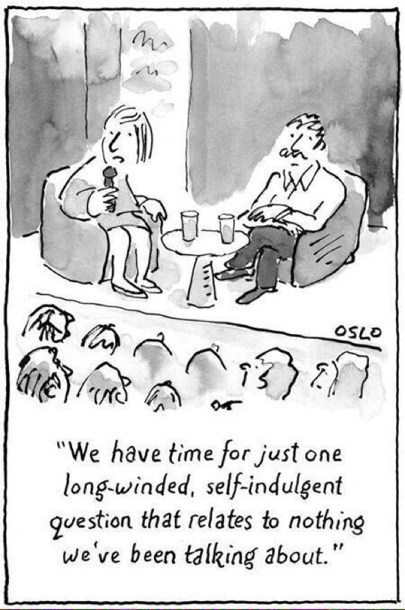

Presentation Skills
MRes Interdisciplinary Chemistry
Why?
Researchers only receive minimal training in this area.
Investing time in improving your presentation skills means investing time in your
research career.
Nature
Masterclass
What is your goal?
What are you trying to communicate?
Activity 1: Who is your audience?
| Audience |
Assumed
knowledge |
What do they need? |
What are they expecting to hear? |
| Funders |
|
|
|
| Institutions |
|
|
|
| Potential Empoyers |
|
|
|
| Conference Attendees |
|
|
|
Preparing a presentation
Q: What do you need to do?
Activity 2: Prepare and deliver a one minute Presentation.
Intermediate Tips
- Tell a story. Chronology, analogy, personal.
- It's a symphony. It needs highs and lows. A good pause is good.
- Less is More.
- Compelling (verbal) transitions.
Preparation
- Prepare your equipment.
- Rehearse your delivery.
- How to interact with your audience? Be professional. Be engaging.
- Prepare for questions.
- Manage difficult situations that might arise during your presentation.
Rehearse
- Out loud.
- But don't memorise....except your first line.
What do I say?
There is NOT one correct delivery.
Eye Contact
- Pick a person.
- Online? Use a sticky note!
Activity 3: Do it again!
Prepare a 1 minute Presentation
Advanced Tips 1
- Introduce the enemy. Every story needs a villain or a problem to be solved.
- Focusing on benefits. This is what people care about.
- Sticking to 'Rule of Three'. Things are best remembered and reinforced in threes.
Advanced Tips 2
- Sell dreams, not results. Create a vision people believe in.
- Make numbers meaningful. Compare large numbers to things people understand.
- Use plain english.
Verbal Transitions 1
- Provide some chronological context. “To begin
with, let’s look at…”, “We then moved on to investigate…” or “Now that we know how material
A behaved,
let’s look at material B exposed to the same conditions”.
- Supporting information on the next slide? “Similarly” or “This finding was confirmed when
we…”.
- Opposing or contradicting information on the next slide? “However”,
“Conversely” or “On the other hand”.
Verbal Transitions 2
- Opportunity for a cliffhanger? “You’ll never guess what happened next…” or “You wouldn’t
believe my surprise when I saw…”
- Move to emphasize transitions.
Pacing
- Average conversational speed.
- Not monotonous! Alternate speed for variety.
- If you catch yourself speeding up, take a deep breath followed by a normal breath to reset the
pace.
Answering questions
- Prompt. A question I frequently get asked is...
- Prime. You might have noticed this interesting additional peak in the graph. I will save
the
discussion of it
for Q&A
- Hidden slides.
- Chosing questions? Diversity.

Answering questions
- Repeat the question.
- Address the entire audience when answering the question.
- dont look for validation
- Be curious
Firefighting
- "That's an interesting question, definitely something I would like to think about."
- "That's an intersting point. I guess the question will eventually be.. this different one.."
- Answer only the question that was asked.
Dealing with technical difficulties
- Chat with your audience. Recap.
- Any Questions?
- Anecdotes?
- Continue without slides!